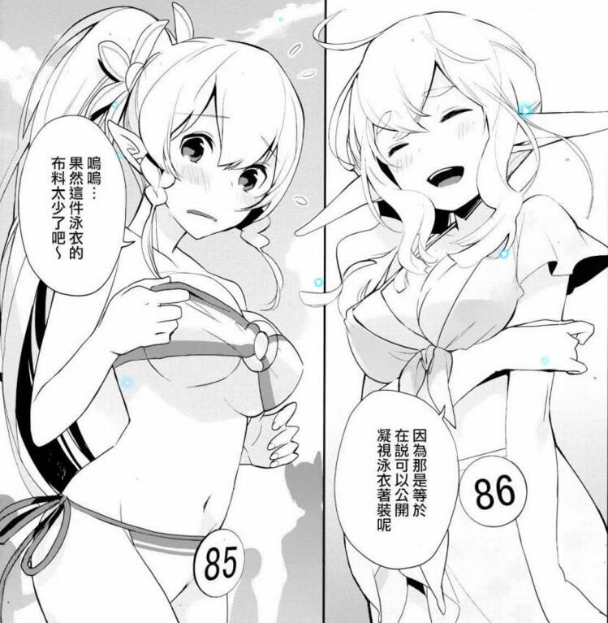

第二百二十四章 少女们的乐章
蔚蓝的天空，火热的沙滩……
“うみ（u mi）！！！ ”
叉着腿站在灼热的沙子上，两个女孩双手放在嘴前做喇叭筒对着大海大声的呼喊着，充满朝气的声音让在沙滩上的其他玩家们频频侧目。
“老实说，我是不明白这样做要什么意义了……”看着蓝子和优纪的举动，月姬无奈的耸了耸肩，然后看了看边上的围观群众，“……好丢脸的感觉！”
“这个可是来到海边的惯例项目呢！”
放下手，优纪一本正经的看着月姬说道，然后眼睛的视线在月姬的身上上下打量着。
很遗憾的，姐姐并没有穿她们推荐的比基尼泳衣，虽然平日里现实的服装对方是随她们设计搭配的，但是只有这点非常坚持，甚至还想穿潜水服来海滩……嘛~~还好姐姐心软，软磨硬泡的成功将潜水服从对方的泳衣选项里剔除掉，最后选了一件
选择了一件稍微保守一点的白色的分体式的泳裙。
“找个无人海滩不好吗？”月姬问道，“在那里怎么大喊都不会引人注目的！”
月姬可以感受到一些讨厌的男性玩家的视线，虽然穿着泳裙裸露程度不是那么高，但是却还是被一些令人毛毛的视线频频照顾到，在这种地方真的是超不自在的。
“这样的话就没有去海滩的气氛了呢！”蓝子摇了摇头，所谓的去海滩，她和妹妹所想的都不只是体验在海里游泳的感觉，她们想要的是，体验一次从小就没有机会体会的海滩的气氛。
“难不成……”优纪看着月姬露出贼兮兮的笑容，“……姐姐是害羞了！！”
“没错，是害羞了！”月姬并不否认，很大方的点了点头，这种懦弱的心理，并不需要去掩饰。说起来泳衣不是第一次穿，一起在约菲尔城的时候亚丝娜有给她做过一件，并且穿着一起在那泡澡，但是在这么多人面前穿还是第一次……实在是让很不自在！
“耶~姐姐的反应真无聊。”优纪鼓着嘴说道，如果对方害羞起来的话，她就可以借机多多调戏对方，然而那么干错了承认自己害羞了，反而让优纪不知道该如何下手。
“小丫头！”月姬在优纪的脑袋瓜上轻轻的弹了一下，小丫头在想什么她一清二楚，所以才不会给对方得寸进尺的机会。
“喊也喊了，然后你们要做什么呢？”月姬问道，一阵海风吹过差点将月姬的帽子掀起，不过月姬眼疾手快的按住帽檐，不过盘在帽子里的白色长发因此飘洒了出来，这样的头发正常说【月姬】是没有的，但是今天月姬所使用的却是【琪莎拉】的账号。
“是下水游泳还是在沙滩上打……”
“蓝子？优纪？还有琪莎拉？！！”
突如其来的声音让月姬楞了一下，她的记忆很好，虽然只算得上是泛泛之交，已经半年多没有和对方接触过了，但是她还是记得那是桐人的正牌妹妹的声音。
回过头，映入月姬眼里的确实是那个金发的风精灵，对方身穿着类似比基尼的泳衣，下作的乳量完全无法被泳衣装下，摇摇欲坠的样子吸引了一大波的丧失。
“果然是你们啊！”莉法跑了过来，在确认了月姬的面貌后，笑着对月姬几个打了下招呼，“好久不见啊，你们！”
“好、好久不见，莉法。”月姬尴尬的摆摆手，真的是超级不巧的，没想到那么大的ALO，竟然会那么巧的撞上莉法，沙滩这里人太多影响了她的感知能力，早知道这只桐人妹妹在的话，就算优纪和蓝子不愿意，她也要带着她们闪了改日再来。
“好久不见，莉法桑！”优纪和蓝子倒是没有月姬那么多想，很自然的对莉法打了下招呼，虽然不想和太多人牵扯，但是她们也不会很敏感的拒绝一切靠近的人。
“你泳衣上的这个是……？？”蓝子有些疑惑的看着莉法腰间的“85”的数字，沙滩上似乎有不少人都有这样的东西，只是数字有些不一样。
“这个是，是我们参加泳衣大赛的参赛者证明了。”莉法指着腰间的编号随意的说道，“如果能胜出的话，就可以获得一百万的奖金哦！”
“一、一百万？！！！”优纪和蓝子吃惊的看着莉法，月姬倒是对此毫无感觉，要知道GM不缺钱的。
“莉法！是认识的人吗？”
在莉法跑来的方向，又跑过来三个女孩子，有些眼熟的三个人，其中两个人是想要和精灵王后抢凯子的小三——莉兹贝特和西莉卡，另外一个人，则是差点在艾恩格朗特开出百合花的少女，这三人都属于月姬见过她们，但她们没有见过月姬的那一类人，在月姬被关押的时光里，展示给她看监控画面里曾经都有捕捉到过这三个人的身影。
“嗯，这是琪莎拉，还有蓝子和优纪……”莉法点点头，同时为自己的朋友介绍月姬几个人，“……是以前一起组队过的伙伴，不过在ALO重新被运营后就一直联系不上。”在对朋友说完后，莉法又将目光放到了月姬的身上，指着莉兹贝特几个说道，“这个是莉兹贝特，这个是西莉卡，还有这个是路克丝，和琪莎拉一样，都是原SAO玩家，比起我，你们应该会有更多的共同话语吧……”
之所以会知道月姬是SAO玩家，自然是大嘴巴的桐人透露的，想必莉法知道所谓的桐人以及桐子，就是现实里她心爱的哥哥和人，一定也很惊讶吧。
“对了，哥哥和亚丝娜很想向你道谢呢，那件事事情多亏了琪莎拉呢！”
莉法也被告知了一些规矩，虽然雷克特公司的人体试验丑闻最终还是没有被掩盖住，但是至少SAO未归还者的解救功劳还是扣在了假想课的头上，所以无论是月姬还是桐人，都要淡化自身的存在，不能牵扯其中。
“当面？确定？”月姬意味深长的看着莉法。
桐人敢让熟人知道他在ALO里扮演妹妹桐子这样的角色的事情？
……
【短小无力……你们说得对】【虽然有琪莎拉的泳装图，但不是咱预想的泳衣款式，所以不便公布】